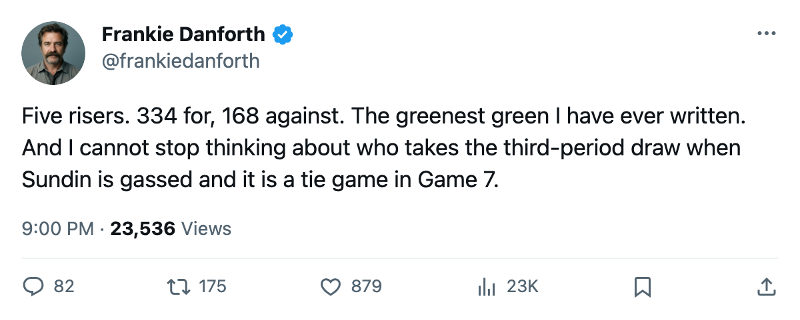

TOR
TORDANFORTH: Five Leafs on the Bureau's top 20 risers, and I am still not smiling
The Development Index has never been this blue and white. The Panic Meter says green. I say read the centre column again.
 Frankie DanforthColumnist · Queen City Telegram
Frankie DanforthColumnist · Queen City Telegram
Code Green

The Bureau's Development Index puts five Toronto players among the league's top 20 risers.  Marian Gaborik96 leads at +6.
Marian Gaborik96 leads at +6.  Barret Jackman84,
Barret Jackman84,  Rostislav Klesla82, and
Rostislav Klesla82, and  Rick Nash81 are at +5.
Rick Nash81 are at +5.  Brad Richards85 is at +4. No other club places more than two.
Brad Richards85 is at +4. No other club places more than two.
I know what that means. The 112 points in the standings are not a fluke. 334 goals for against 168 against is the most lopsided split in the league, and the guys driving it are still getting better.
What the Index says and what it does not
Gaborik's 84 points in 70 games at 20.1 minutes a night is the number that makes me feel safe. Richards at 61 points in 68 games on a $1.00M salary, one year left, is the number that makes me feel anxious. A player that good, at that price, in a contract year, on a club that leads its division by 30 points, should not be the answer at second centre in April.
Petr Chlup84 has 47 points in 59 games at age 19, carrying a 95 potential that the Bureau's Book puts alongside Gaborik's 90. He is the reason the next few years look different from the last few. He is also 19, and I have learned not to ask a 19-year-old to win a playoff series against a man who has been doing it for 10 years.
The Meter
Code Green. I am writing that phrase and hating it. 112 points, 5 straight wins, 5 risers, a 334-168 goal split. Every rational measure says the Panic Meter sits at Green and stays there.
8 days to what the calendar has as the trade deadline. A club with 112 points and the best goal split in the league does not need to sell. It needs to decide whether 112 points is the ceiling or the floor. Richards at $1.00M in a contract year is the decision. Chlup at $2.34M with 2 years left is the future. The space between those two numbers is where my anxiety lives.
I want a draw-winning centre who plays 18 minutes, kills penalties, and takes the faceoff when Sundin is on the bench. That man is not on this roster. The Index cannot fix that. The deadline is 8 days away and I am not stopping.
